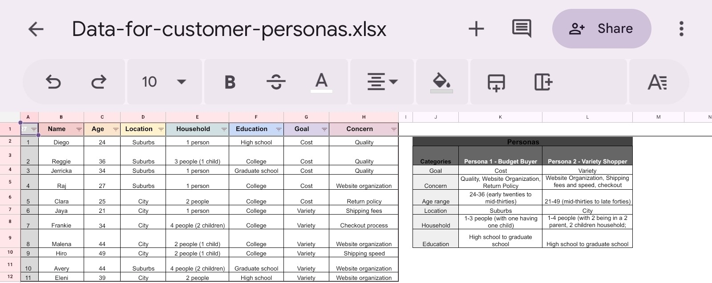
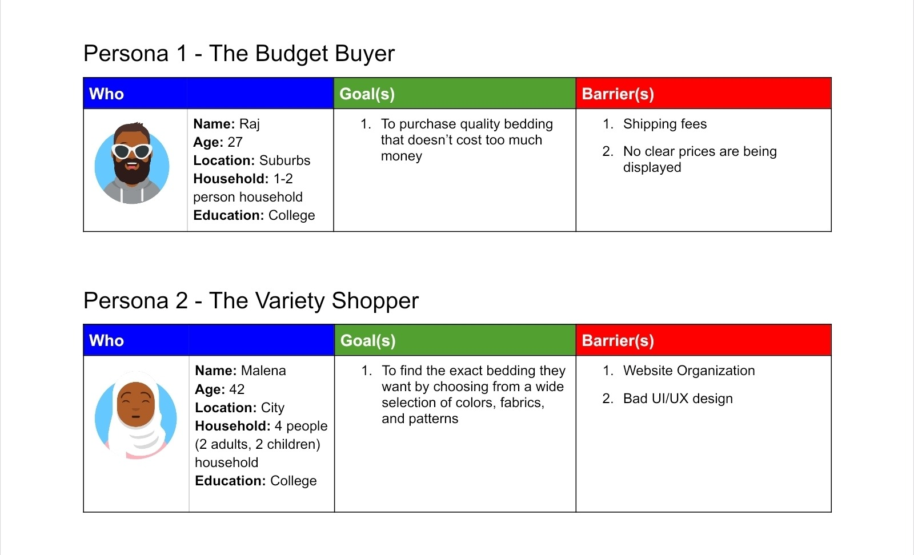
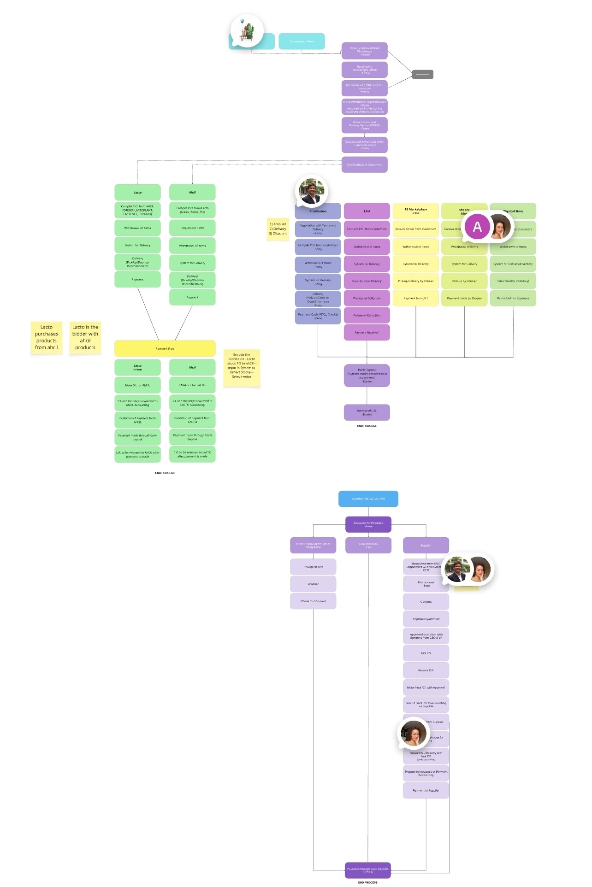
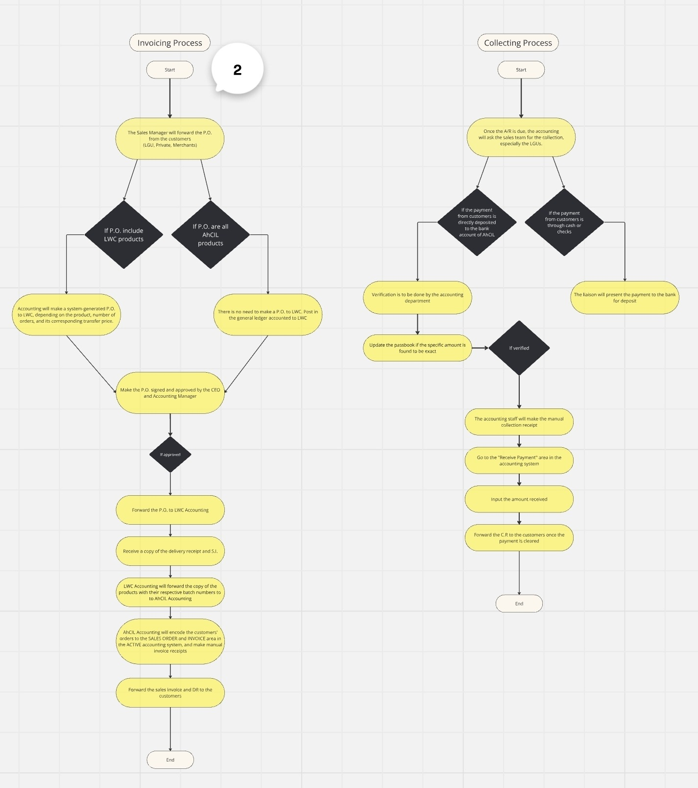

Sample Brand Kit
Created in July 2024 for LactoBiotics Worldwide Inc. social media posts

Data Entry and Organization for the creation of Customer Personas
In line with building brand strategy by identifying potential consumers and how to effectively market products or services offered to them.

Sample Customer Personas
In line with building brand strategy by identifying potential consumers and how to effectively market products or services offered to them.


Interdepartmental Processes for Auditing Workflow
First created in September 2024 and finalized in October 2024 for LactoBiotics Worldwide Inc.
Accomplished using the Miro platform
Accounting Process Workflow
First created in September 2024 and finalized in October 2024 for LactoBiotics Worldwide Inc.
Accomplished using the Miro platform

Sample Pitch Deck Presentation Content Ideas and Calendar for Morning Momentum
Created in October 2025 for a fitness influencer launching their new fitness campaign.
The presentation consists of sample ideas along with a content calendar to keep in track of the creation and approval of posts, as well as its publishing. Accomplished using the Canva platform
Sample Templates for Virtual Assistance
Created in 2025
Compilation of templates created for Virtual Assistant responsibilities. These templates allow me to effeciently execute and accomplish daily, weekly, and monthly tasks to effictively serve the needs of potential clients. Accomplished using Google Workspace tools.
Written for the Martino Abellana Website
Published in October 2025